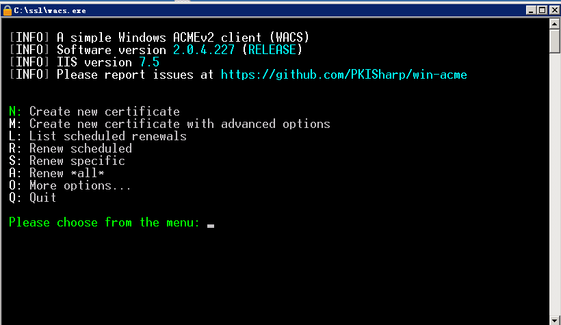
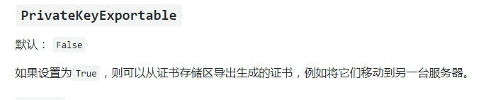
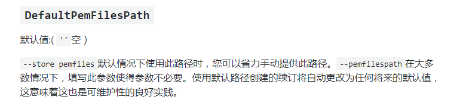
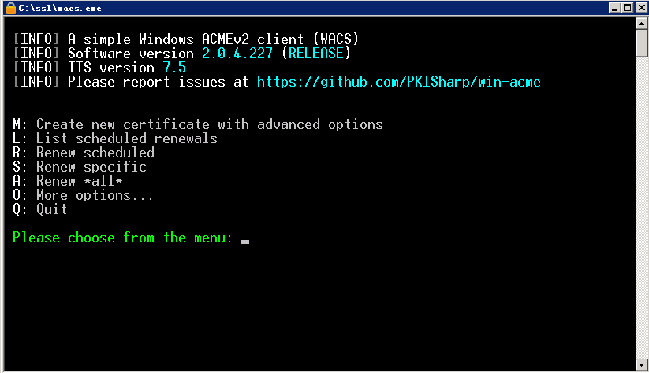
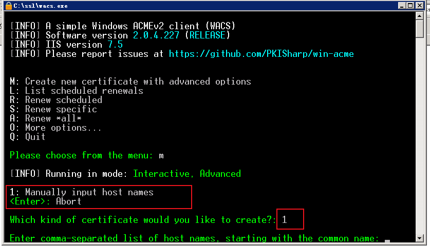
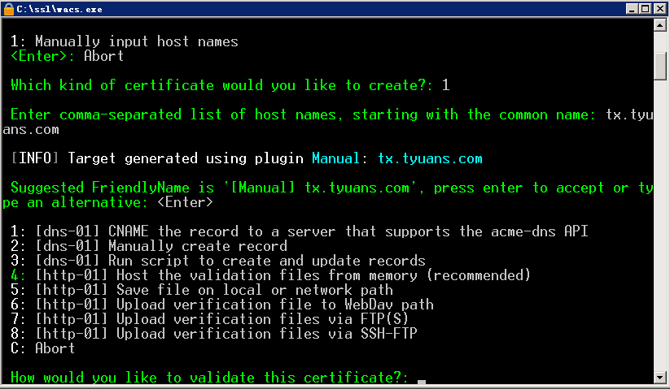
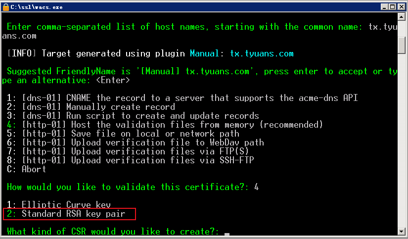
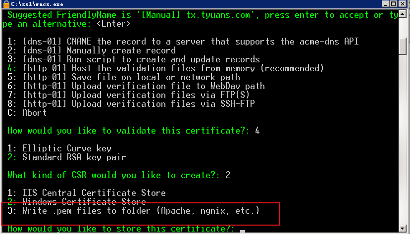
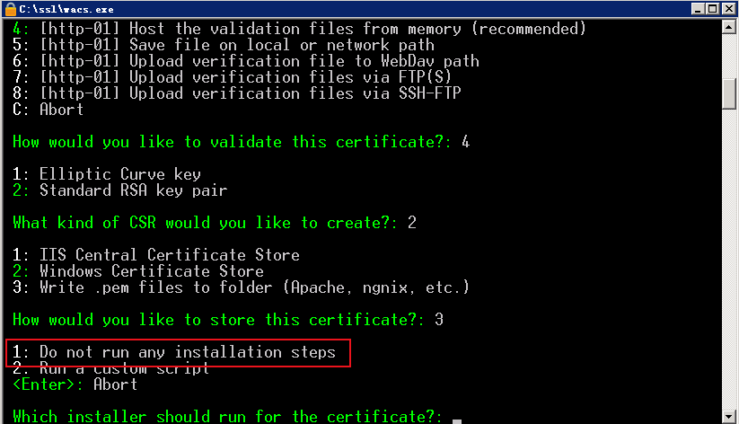

windwos Nginx 使用 win-acme 申请免费SSL证书
前置知识——SSL证书
- SSL
SSL( Secure Sockets Layer 安全套接层 ) 是网景科技研发的用以保障在Internet上数据传输的安全的技术规范。
- OpenSSL
简单地说,OpenSSL是SSL的一个实现,SSL只是一种规范.理论上来说,SSL这种规范是安全的,目前的技术水平很难破解,但SSL的实现就可能有些漏洞,如著名的”心脏出血”.OpenSSL还提供了一大堆强大的工具软件,强大到90%我们都用不到.
- 证书标准
X.509 - 这是一种证书标准,主要定义了证书中应该包含哪些内容.其详情可以参考RFC5280,SSL使用的就是这种证书标准.
- 编码格式
同样的X.509证书,可能有不同的编码格式,目前有以下两种编码格式.
PEM - Privacy Enhanced Mail,打开看文本格式,以”—–BEGIN…”开头, “—–END…”结尾,内容是BASE64编码.
查看PEM格式证书的信息:openssl x509 -in certificate.pem -text -noout
Apache和*NIX服务器偏向于使用这种编码格式.
DER - Distinguished Encoding Rules,打开看是二进制格式,不可读.
查看DER格式证书的信息:openssl x509 -in certificate.der -inform der -text -noout
Java和Windows服务器偏向于使用这种编码格式.
- 相关的文件扩展名
这是比较误导人的地方,虽然我们已经知道有PEM和DER这两种编码格式,但文件扩展名并不一定就叫”PEM”或者”DER”,常见的扩展名除了PEM和DER还有以下这些,它们除了编码格式可能不同之外,内容也有差别,但大多数都能相互转换编码格式.
CRT - CRT应该是certificate的三个字母,其实还是证书的意思,常见于*NIX系统,有可能是PEM编码,也有可能是DER编码,大多数应该是PEM编码,相信你已经知道怎么辨别.
CER - 还是certificate,还是证书,常见于Windows系统,同样的,可能是PEM编码,也可能是DER编码,大多数应该是DER编码.
KEY - 通常用来存放一个公钥或者私钥,并非X.509证书,编码同样的,可能是PEM,也可能是DER.
查看KEY的办法:openssl rsa -in mykey.key -text -noout
如果是DER格式的话,同理应该这样了:openssl rsa -in mykey.key -text -noout -inform der
CSR - Certificate Signing Request,即证书签名请求,这个并不是证书,而是向权威证书颁发机构获得签名证书的申请,其核心内容是一个公钥(当然还附带了一些别的信息),在生成这个申请的时候,同时也会生成一个私钥,私钥要自己保管好.做过iOS APP的朋友都应该知道是怎么向苹果申请开发者证书的吧.
查看的办法:openssl req -noout -text -in my.csr (如果是DER格式的话照旧加上-inform der,这里不写了)
PFX/P12 - predecessor of PKCS#12,对*nix服务器来说,一般CRT和KEY是分开存放在不同文件中的,但Windows的IIS则将它们存在一个PFX文件中,(因此这个文件包含了证书及私钥)这样会不会不安全？应该不会,PFX通常会有一个”提取密码”,你想把里面的东西读取出来的话,它就要求你提供提取密码,PFX使用的时DER编码,如何把PFX转换为PEM编码？openssl pkcs12 -in for-iis.pfx -out for-iis.pem -nodes
这个时候会提示你输入提取代码. for-iis.pem就是可读的文本.
生成pfx的命令类似这样:openssl pkcs12 -export -in certificate.crt -inkey privateKey.key -out certificate.pfx -certfile CACert.crt
其中CACert.crt是CA(权威证书颁发机构)的根证书,有的话也通过-certfile参数一起带进去.这么看来,PFX其实是个证书密钥库.
JKS - 即Java Key Storage,这是Java的专利,跟OpenSSL关系不大,利用Java的一个叫”keytool”的工具,可以将PFX转为JKS,当然了,keytool也能直接生成JKS,不过在此就不多表了.
- 证书编码的转换
PEM转为DER openssl x509 -in cert.crt -outform der -out cert.der
DER转为PEM openssl x509 -in cert.crt -inform der -outform pem -out cert.pem
(提示:要转换KEY文件也类似,只不过把x509换成rsa,要转CSR的话,把x509换成req…)
- 获得证书
向权威证书颁发机构申请证书
用这命令生成一个csr: openssl req -newkey rsa:2048 -new -nodes -keyout my.key -out my.csr
把csr交给权威证书颁发机构,权威证书颁发机构对此进行签名,完成.保留好csr,当权威证书颁发机构颁发的证书过期的时候,你还可以用同样的csr来申请新的证书,key保持不变.
**或者生成自签名的证书
**openssl req -newkey rsa:2048 -new -nodes -x509 -days 3650 -keyout key.pem -out cert.pem
在生成证书的过程中会要你填一堆的东西,其实真正要填的只有Common Name,通常填写你服务器的域名,如”yourcompany.com”,或者你服务器的IP地址,其它都可以留空的.
生产环境中还是不要使用自签的证书,否则浏览器会不认,或者如果你是企业应用的话能够强制让用户的浏览器接受你的自签证书也行.向权威机构要证书通常是要钱的,但现在也有免费的,仅仅需要一个简单的域名验证即可.有兴趣的话查查”沃通数字证书”.
使用 win-acme 申请免费SSL证书
项目地址：https://github.com/PKISharp/win-acme
下载稳定版本，不要最新的，可能有BUG

如果服务器有iis并且开启的话可以直接“N”直接快捷创建，里面输入你网站的域名即可，域名要先提前关联上IP无脑下一步会自动把证书配置到IIS中，并且开启443端口，如果是阿里云类似的有防火墙的需要配置一下。
然后如果想要找到证书相关目录，在
1 | C:\ProgramData\win-acme\acme-v02.api.letsencrypt.org\Certificates |
中可以找到。另外一些内容是在读软件wiki中发现的。默认生成的证书如果在IIS中选择导出，是不能导出私钥的。
如果未来有需求需要导出，需要修改软件目录下的“settings.config”找到“PrivateKeyExportable”修改下面的value为True。

不使用IIS，使用Nginx
至于我的需求就很难受，因为我不是iis中使用，需要PEM文件，而生成的即使导出了也包含私钥了，还是pfx文件，如果转换的话需要openssl，又要安装其他软件。
通过阅读wiki发现软件有这么一个选项

“DefaultPemFilesPath”这个参数通过添加值，可以生成PEM文件的证书和私钥，可以直接导入到相关程序中。方法如下：
首先我们来到主页面，点击”M”使用高级模式

紧接着我们使用自定义输入名称，也没有其他选择

这个名称是域名，跟最上面写的一样，需要提前解析好紧接着我们使用“4”也就是默认的验证方法。

选择“2”使用完整的RSA

注意：使用第三个，也就是生成PEM文件供其他软件使用。

这一步我选择2之后就卡住了，所以我只能选择第一个

然后提示输入文件目录，会生成证书